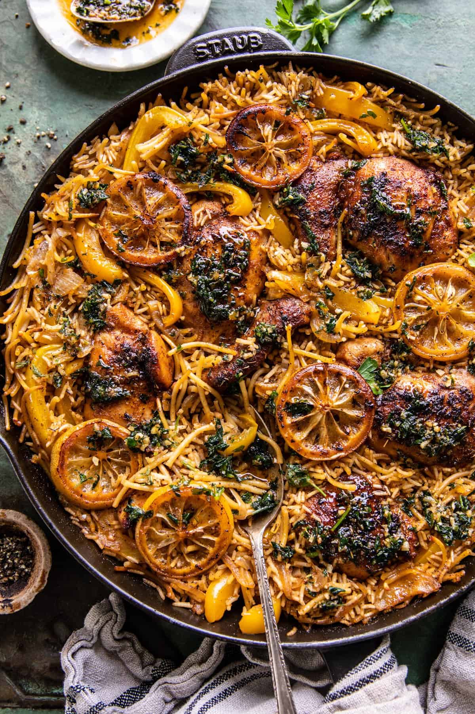

Cajun Chicken and Noodles

Description
This is a Cajun style baked chicken and noodles dish. It's a flavorful mix of blackened chicken with rice,
noodles, and vegetable made casserole style in a cast-iron skillet.
Ingredients
- 2 tablespoons extra virgin olive oil
- 1 pound boneless chicken breasts or thighs
- 2 tablespoons cajun seasoning
- kosher salt and black pepper
- 6 tablespoons salted butter
- 1 lemon, sliced
- 1/2 cup dry broken spaghetti or angel hair pasta
- 1 cup long grain rice
- 1 medium yellow onion, sliced
- 2 bell peppers, sliced
- 3-4 cups low sodium chicken broth
- 3 cloves garlic, chopped
- 1/2 cup fresh tenders herbs, cilantro + parsley
- chili flakes
Directions
- Preheat the oven to 425° F.
- In a large oven-safe skillet, combine the olive oil, chicken, and cajun seasoning, toss to coat. Set the
skillet over high heat. Sear on both sides until golden, 3-5 minutes. During the last 2 minutes of cooking, add
1 tablespoon of butter and lemon slices. Remove everything from the skillet.
- Add the rice and pasta. Cook until the rice is toasted, about 1 minute. Add the onion and peppers and
continue to cook another 3-4 minutes, then pour in 3 cups broth. Season with salt and pepper. Bring to a boil.
- Slide the chicken, lemon slices, and any juices left on the plate back into the skillet. Bring to a boil.
- Cover the skillet and turn the heat down to the lowest setting possible. Allow the rice to cook 10 minutes,
until most of the liquid has cooked into the rice, but not all of it. If needed add more broth. Bake, uncovered
for 10-15 minutes or until the chicken is cooked through.
- Meanwhile, melt together 5 tablespoons butter, the garlic, and a pinch of chili flakes. Cook until the butter
is browning. Stir in the mixed herbs.
- Serve the chicken and rice drizzled with garlic butter and topped with fresh herbs.